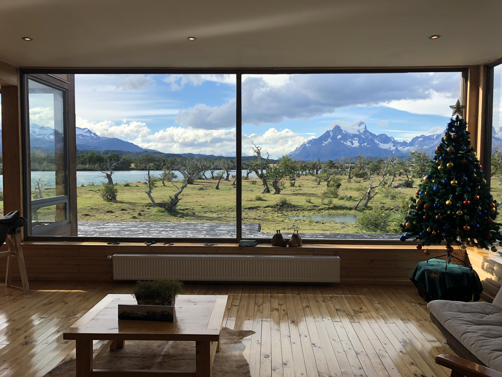

<!DOCTYPE html>
<html>
<head>
	<link rel="stylesheet" type="text/css" href="../css/style-6.css" />
	<title>20111107</title>
</head>
</html>
<body>
<div id=content>
	<div id="blog-container" style="height:1000px;">
		<div class= "info">
			<div id="header">
			<h1>Spark Joy</h1>
			</div>

			<div id=text-blocks>

				<div class="block" id="block-1">

					<p> In the Hirshorn Museum, Laurie Anderson's exhibit <a href="https://hirshhorn.si.edu/exhibitions/laurie-anderson-the-weather/"><u>The Weather</u></a> had a black-walled room filled with a bunch of quotes and doodles in white paint. One of these quotes was: <em> "Like the Dalai Lama said: An artificial flower is </em> just as good <em> as a real one because it reminds you of the real flower." </em> </p><br> 

				</div> 

				<div class="block" id="block-2">

					<p> <a href="https://en.wikipedia.org/wiki/Marie_Kondo"><u>Marie Kondo</u></a> and I agree that everything present in our lives—material or otherwise—should be a means to our happiness and/or fulfillment. Much like beautiful flowers make a room more pleasant, filling your life with things that spark happy memories—and getting rid of what precipitates the opposite—is another great way to work on happiness. This will also make it easier to <a href="../blog_entries/blog_think_happy.html"><u>think happy thoughts</u></a>. </p><br> 

				</div> 

				<div class="block" id="block-3">

					<p> Pictures are a great way to infuse happiness into your life. I’ve never been the biggest fan of stopping what I was doing to take a photo. Now, after spending a lot of time on planes and public transit looking at old photos, I know how important they are. I have a lot of pictures hanging up on my walls that make me smile when I look at them. I experience a similar rush of emotion to what I felt when I was in that moment. I think about the people that made that moment great, many of whom still make my life great. People used to carry around lockets, but nowadays we can have our favorite memories plastered all over our walls, our electronic devices, and even <a href="https://twitter.com/vidman/status/989610710731718656?ref_src=twsrc%5Etfw%7Ctwcamp%5Etweetembed%7Ctwterm%5E989610710731718656%7Ctwgr%5E%7Ctwcon%5Es1_c10&ref_url=https%3A%2F%2Fwww.insider.com%2Fparents-tattoo-children-artwork-doodle-2018-4"><u>our bodies.</u></a>. </p><br>

				</div> 

				<div class="block" id="block-4">

					<p> Pictures aren’t as great as these memories: it’s still important to be as fully present in the moment as possible. But once in awhile, I’ll take out my phone to take a picture of something I know will make me smile in the future. That’s <a href="https://twitter.com/naval/status/1193778638174355457?s=20"><u>thinking ahead AND living in the moment.</u></a> </p><br>

				</div> 

			</div>	

			<div class="content-img-wrapper">
				
				<p class="caption">Patagonia, Chile</p>

			</div>

			<div class="home">

				<p> <a href="../blog_entries/blog_20211011.html"><u>More on How to Be Happy</u></a> <br> </p>

			</div>

			<div class="home">

				<p> <a href="../blog.html"><u>Back to the Blog</u></a> <br> </p>

			</div>
	</div>
</div>
</div>
</body>

 


